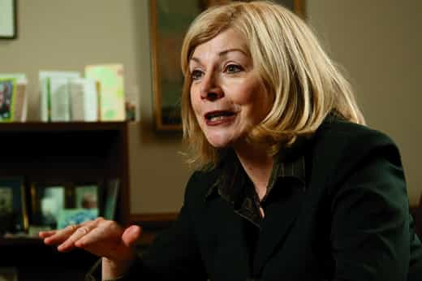
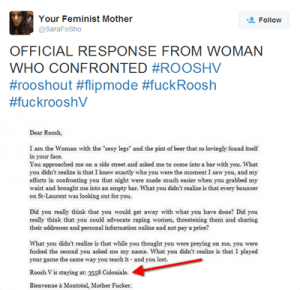
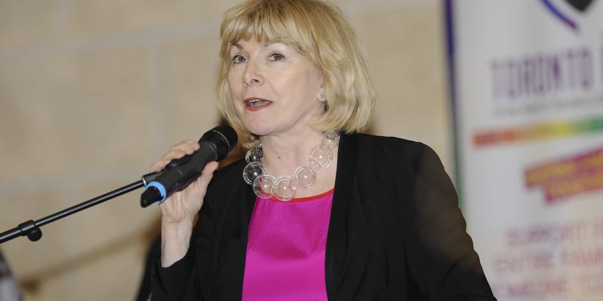
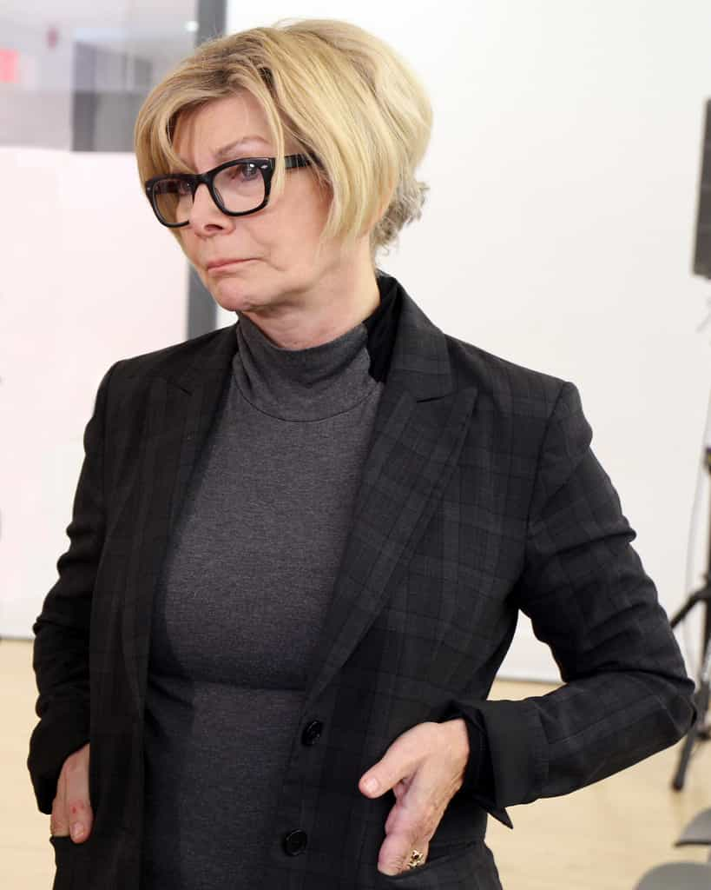

< < < Back
Drug Smuggler Turned Canadian MPP Cheri DiNovo Libelously Calls Roosh A Criminal – Return Of Kings
“I think that people recognize the criminal that he is and that’s why he’s hiding and evading and wouldn’t say where he actually spoke.”
– Actual criminal Cheri DiNovo, who used to smuggle LSD into Canada from the United States, ironically talking about (and defaming) Roosh, who has not been charged, let alone arrested for any crime in Canada.
Ontario provincial New Democratic Party (NDP) politician Cheri DiNovo, sensing the opportunity to ride his coattails, has been one of the few non-municipal politicians in Canada to attack Roosh V. She appeared at a “rape culture” demonstration on the weekend he delivered his successful Toronto lecture.
In addition to lambasting Roosh for being a “criminal”, she has avoided any discussion of her own criminal past smuggling drugs or the criminal incitement furthered by a litany of the SJWs whose cause of harassment and defamation she supports.
From Aurelie Nix’s false rape threat accusation to Jessica Lelièvre’s assault to Sara Parker-Toulson’s support of rape wishes on unborn children and calls to violence, DiNovo is awfully selective regarding the outrage and criticism she chooses to vent about.
We need to be analytical and explore why exactly, of all the provincial politicians in Ontario (or Quebec), she is the one appearing at SJW events. The answer concerns calculated attempts at increasing her own prominence, which has been severely lacking in recent years. This intersects with a basic need to distract any future attention away from her criminal antecedence.
DiNovo should have been jailed for years, like any male drug smuggler

Cheri DiNovo will talk about male privilege, heterosexual privilege and white privilege, but not about her privilege in not going to jail for the long time she deserved.
Cheri DiNovo may not have faced the formal justice she deserves (even as she demands “justice” against people for what actually amounts to thoughtcrimes), but she is nonetheless an admitted criminal. LSD was already criminalized for mere possession in multiple jurisdictions at the times she smuggled it across large tracts of North America into Canada. When her criminal history, an entirely relevant issue, has been raised previously by opponents, she shrilly and self-righteously cries “Gutter tactics!”
Resorting to explaining DiNovo’s actions through a childhood prism of her father’s death and stepmother’s suicide is disingenuous. By that standard, my grandparents should have been the biggest drug lords continental Europe has ever seen.
My very, very young grandfather’s experiences against Stuka dive-bombers during the German invasion, the removal of my grandparents’ neighbors and even relatives to internment and concentration camps, their own harassment at the hands of the Nazis, and the near-starvation they endured for years could be considered casually sufficient for them to have turned out as long-term criminals peddling life-ruining substances.
But they didn’t turn out that way. Nor did their children, who grew up in deprived post-war circumstances as worse as or far worse than DiNovo’s.
She gave unequivocal support to those doxxing, threatening or trying to incite mob violence
Cheri DiNovo was, in fact, incredibly silent about the violent threats and other threatening activity against Roosh. She supported Sara Parker-Toulson, who deliberately disseminated Roosh’s Montreal address in tandem with “Jennifer,” the drink-thrower who claims to be a feminist but has an uncanny knack for disappearing and appropriating female legal privilege after committing what Canadian law regards as an assault. DiNovo did not call out this unacceptable behavior, designed to incite others to attack Roosh or criminally falsely imprison him.
The end result was, thankfully, more benign. Yet it still resulted in damage that the property owner has had to fix. What good exactly was Sara Parker-Toulson trying to achieve by spreading someone’s address, in the context of a night where that person had already been assaulted, chased off by a menacing mob and falsely imprisoned.
DiNovo distinctly and utterly turned a blind eye to actions she would label criminal if against those whose beliefs she shares. This is a tacit endorsement of the violence and threats Roosh was subjected to.

By the time she appeared at the protest in Toronto to promote herself, the Ontario MPP had actively collaborated with a group committed to criminal and anti-social behavior. At no stage did she call out this hateful collection of people, even as she maliciously and slanderously called Roosh a criminal.
If you read the vandalism below, it is attempting to spell out “Roosh V Dickless,” a very charming allusion to violent genital mutilation against him. No condemnation, either for the vandalism itself or the threatening message, came from Cheri DiNovo or her representatives.
But should we be shocked? After all, this is a woman who surreptitiously and effectively smuggled hard drugs into Canada, helping to ruin lives in the process. She’s not smuggling drugs nowadays, she’s just smuggling the truth about miscreants like Sara Parker-Toulson, who desire serious violence against their opponents, out of sight.
https://twitter.com/rooshv/status/632274581164847104
The fundamental question: “What does she get by attacking Roosh?”

Grab the microphone and distract attention, Cheri.
Here we have an ex-drug smuggler who tries to hypocritically pontificate moral and other standards to other people. What matters is that DiNovo’s ambition clearly outstrips her current position within provincial Ontarian politics, relegated to the third-biggest (or plain smallest) represented party, in a layer of government Ontarians pay much less attention to than national politics.
An excellent demonstration of this chasm between this reality and her overall ambition is her hosting of the 3 Women radio program on CIUT 89.5 FM, where she holds “discussions” and “interviews” with a revolving door of two other female politicians or political figures every Tuesday.
DiNovo needs an outlet or, better yet, multiple outlets to give herself a bigger brand name recognition and platform, perhaps for a future tilt towards federal politics. This is where Roosh comes in.
Note that of the nearly two dozen other NDP members of the Legislative Assembly of Ontario (plus the NDP members of the federal legislature), none advocated against Roosh to anywhere near an iota of the extent that she did. And this is a leftwing party that depends greatly on contrived university-style protests against budget cuts, “sexism” and other issues.
Hypocrites abound in the SJW mobs

Check your privilege, Cheri DiNovo.
You have already seen the gargantuan family privilege of professional leftist complainers like Haley Yael Firkser and Jessica Lelièvre, the latter having also committed criminal assault. Now DiNovo joins the fray as a feminist SJW who has no place criticizing others for their actions, at least until she spends serious time incarcerated.
Roosh has committed no crime in Canada and the onus is on DiNovo to prove he has done anything wrong. Short of that, she has contributed nothing but to lie about and defame him, and sought the kind of respected public prominence that a former drug smuggler is never entitled to.
Read More: Matthew E. Duffy Urges The Making Of Criminal False Allegations To “Swat” Roosh


{kind=link}